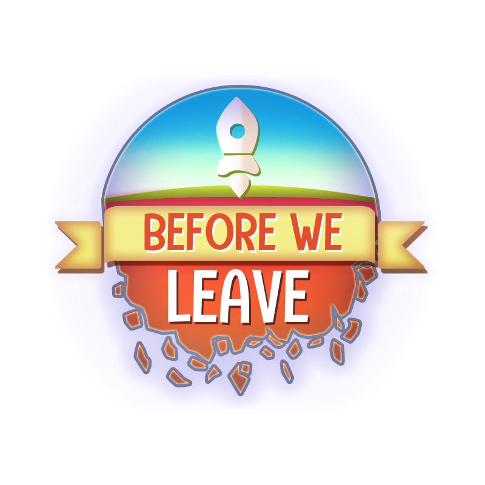

Description
Before We Leave is a non-violent city building game set in your own cozy corner of the universe. Rediscover and rebuild civilization. Create a multi-planet resource network. Overcome ancient challenges and fend off hungry space whales. Your people have spent generations underground. They’ve missed the caress of sun on skin, the squelch of soil between toes, the tickle of flies on noses. They emerge, full of wonder, and with absolutely no idea how to grow anything except potatoes. Rebuild civilization by building huts, harvesting… potatoes and expanding your reborn society to other continents and eventually other planets. Manage resources, discover ancient tech and create a planetary network of colonies to thrive in your solar system. But the universe is not safe. Ancient, ancestral guardians demand attention and challenge your cities. The planets you inhabit are scarred by the disasters that drove your forebears underground, and those catastrophes will punish poorly managed worlds. Before We Leave is a (mostly) non-violent game. There are no weapons, no battles with neighbours for control of resources. You can, however, perish at the flippers of vast planet-gobbling space whales that graze on your worlds and threaten your civilization. Play, chill out, and expand the fabric of your reborn society at your own pace and create your own solar system of rehabilitated planets. Just watch out for those pesky gigantic intergalactic plankton-feeders.
History
Before We Leave is the first game created by Balancing Monkey Games®; with development starting in 2017.
Balancing Monkey Games is a boutique independent game developer based in Dunedin (Ōtepoti), Aotearoa New Zealand. We create non-violent games that aim to relax and entertain our players, while building a positive and uplifting community that reflects our ideals. It is our mission to make peaceful, accessible and culturally relevant games that enable us to support our local communities. We’re also ambitious for our games and brand to be globally recognised.
Projects
Videos
Logo & Icon
{kind=link}
Awards & Recognition
- "The Pavs (New Zealand Games Festival Awards) 2020:" Winner: The Composed Segment: Excellence in Audio Finalist: The Decorative Piece: Excellence in Visual Art Finalist: The ‘Slice of Heaven’ Grand Prize
- "Kiwi Game Starter (New Zealand Game Developers Association)" First Place 2019 Finalist 2018 (under the working title “Before”)
Selected Articles
-
NZ Game Festival
The Pavs, https://nzgamesfest.com/2020-finalists/
Additional Links
- Soundtrack
- Before We Leave (Original Game Soundtrack) by Benedict Nichols open.spotify.com.
- Platforms
- PC: Epic Games Store epicgames.com.
Team & Repeating Collaborator
- Creative Director
- Sam Barham
- Design Consultant
- Christian 'Akacro' Redding
- Coding
- Isaac Bennett
- Art
- Rafal Urbanski
- UI Art
- Edd Coates
- Concept Art
- Filipe Pinto, Reiker von Motschelnitz, John Barham
- Music
- Benedict Nichols
- Sound Design
- James Dean,Matt Caradus
- Marketing
- Vicarious PR,Tim Ponting,Chris Dwyer
- Localization
- KeyWords Studios, Victor Ramsés, Snow_Leopard, Adiel Holguin a.k.a. Mr_In, ABertrand Ciesielski, Liobuster, Luca Di Vincenzo
- Writer
- Saf Davidson
- Community and Media Manager
- Emily Latta
- Trailer Editor
- Vanessa Williams
- Anna Barham
- Managing Director
- Built Using
- Unity by Unity Technologies, Unity by Unity Technologies, Unity by Unity Technologies, FMOD Studio by Firelight Technologies Pty Ltd., Hexasphere by Arscan, Planet Generator by Andy Gainey, Spacescape by Alex Peterson, Planetary Atmospheric Scattering by Christopher Silvas, Sun Shader by Panteleymonov Aleksandr, Stylized Water Shader by Staggart Creations, Ultimate VFX by Mirza Beig, Amplify Occlusion by Amplify Creations, I2 Localization by Inter Illusion, Vectrosity by Starscene Software
- QA
- KeyWords Studios
Contact
- contact@balancingmonkeygames.com